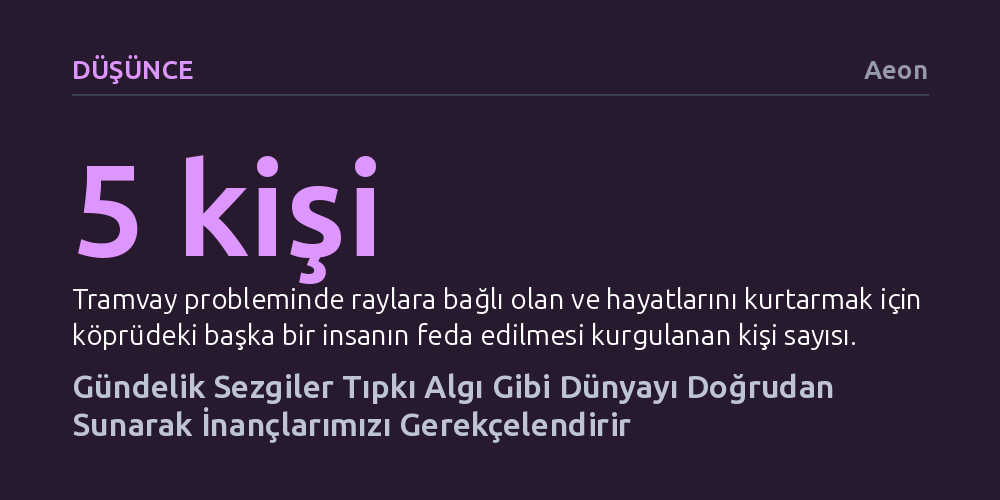

DUSUNCE · Aeon · 2026-10-21
Gündelik sezgiler akıldışı dürtüler değil, kavramsal ve normatif yapıyı zihnimize doğrudan sunan rasyonel kavrayış biçimleridir. Bu doğrudan kavrayış, hiçbir muhakeme zincirine ihtiyaç duymadan inançlarımıza meşru ve sağlam bir temel kazandırır.
İçimizden gelen 'bir şeylerin ters gittiği' hissini güvenilmez bir kuruntu sanmaktan vazgeçip, sezginin de duyu algısı kadar meşru bir rasyonel zemin sunduğunu fark etmemizi sağlar.

Tanımadığınız birinin arabasına binmekten kaçınırken veya şüpheli bir e-postayı silerken zihninizde adım adım bir mantık zinciri işletmezsiniz. Karşınızdakinin davranışlarını kontrol listesinden geçirmez ya da biçimsel bir risk analizi yapmazsınız. O an adam size yalnızca tekinsiz, e-posta sahte, teklif ise şüpheli görünür. Bu anlık hisle hareket etmek yalnızca bağışlanabilir bir refleks değil, gayet makul bir tutumdur; adamın arabasına binmemek, gerekçesini o an kelimelere dökemeseniz bile muhtemelen en akıllıca tercihtir.
Buna rağmen hem gündelik hayatta hem de akademik çevrelerde sezgiler ve iç ses, çoğunlukla akıldışı ya da en fazla kaba kestirme yollar olarak görülüp küçümsenir. Kuşkusuz bu tepkilere her zaman gözü kapalı güvenemeyiz; ancak dünyada rasyonel biçimde yolumuzu bulabilmemiz için bu sezgiler vazgeçilmezdir. İşin ilginç yanı, filozofların bu tür sıradan sezgilerin mantıksal ve rasyonel itibarını aydınlatmak için şaşırtıcı derecede az çaba göstermiş olmasıdır.
Felsefe geleneği bunun yerine dikkatini mantık ve matematik gibi soyut alanlarda işleyen ve 'rasyonel sezgi' denen ayrıcalıklı bir kavrayışa yöneltmiştir. Örneğin '2 + 2 = 4' önermesinin doğruluğu zihnimize apaçık görünür. Oysa felsefecilerin masa başında başvurduğu soyut sezgi ile tehlikeli bir yabancıdan uzak durmamızı sağlayan gündelik sezgi sanıldığı kadar farklı değildir; her ikisi de temelde aynı bilişsel yetinin tezahürleridir.
Dünya hakkında sayısız inanca sahibiz ve bu inançların doğru olmasını önemseriz. Ne var ki zihnimizin dışına çıkıp inançlarımızı gerçekliğin kendisiyle doğrudan karşılaştırma şansımız yoktur; yapabileceğimiz en iyi şey, inançlarımızı sağlam gerekçelere dayandırmaktır. Peki bir inancı ne gerekçelendirir? Eğer bir inanç yalnızca başka bir inançla savunulabilseydi, antik kuşkucuların belirttiği gibi sonsuz bir gerilemeye düşerdik: Her inanç başka bir inanca, o da bir sonrakine muhtaç olur ve hiçbir inanç nihai bir temele kavuşamazdı.
Bu sonsuz döngüyü kırmanın yolu temelcilikten geçer; yani bazı inançların başka hiçbir inanca dayanmaksızın kendi başına gerekçelendirilmiş olduğunu kabul etmek gerekir. Duyu algısı bunun en berrak modelidir. Önümde bir ağaç gördüğümde, görsel deneyimim bana orada bir ağaç olduğunu doğrudan sunar. Algısal görünüşler, salt hayal veya arzulardan farklı olarak hakikat iddiası taşır ve dünyayı olduğu gibi açığa çıkarma niteliğine sahiptir.
Görsel deneyim bir inancın kendisi değildir; gözümün bozulduğundan ya da halüsinasyon gördüğümden şüpheleniyorsam gördüğüme inanmayabilirim. Ancak aksini gösteren bir kanıt yoksa, ağacın bana öyle görünmesi ona inanmam için tek başına yeterli ve meşru bir rasyonel zemin oluşturur. Görünüşün kendisi gerekçelendirici bir ağırlık taşır.
Algının bu gerekçelendirici gücünü sezgiye uyarlamak isteyen düşünürler, sezginin de algı gibi kendine özgü bir zihinsel hissiyata ya da deneyimsel bir parıltıya sahip olduğunu savundular. 'Yarı-algıcılık' adı verilen bu yaklaşıma göre, tıpkı ağacın yeşil görünmesi gibi bir yabancının tekinsiz görünmesi de zihinde özel bir entelektüel yaşantı yaratır ve inancı haklı kılan şey de bu yaşantının kendisidir.
Ne var ki bu açıklama ciddi bir itirazla karşılaşır: Eksik sezgi sorunu. Pek çok insan sezgisel bir yargıya varırken zihninde hiçbir özel hissiyat ya da ayırt edici entelektüel yaşantı deneyimlemediğini belirtir. Bir önerme bize doğru geldiğinde arkasında özel bir duyusal his yoksa, sezginin rasyonel gücünü bu tür bir içsel parıltıya bağlayan açıklama çöker.
Dahası, klinik bir tablo olan derealizasyon (gerçekdışılık) bozukluğu, duyusal hissiyatın algıyı temellendirmek için bile yeterli olmadığını gösterir. Bu durumdaki kişiler renkleri, şekilleri ve duyusal nitelikleri eksiksiz algılar; içsel duyumları kusursuzdur fakat dünya onlara bir türlü 'gerçek' gelmez. Deneyim, gerçekliği ifşa etme gücünü kaybetmiştir. Demek ki gerekçelendirmeyi sağlayan şey deneyimin içsel olarak nasıl hissettirdiği değil, gerçekliği zihne nasıl sunduğudur.
Yazarın geliştirdiği teze göre çözüm, sezgiyi bir his olarak değil, 'bilişsel bir duruş' olarak kavramakta yatar. Zihinsel tutumları birbirinden ayıran şey içsel parıltıları değil, üstlendikleri bilişsel roldür. Örneğin inanç iddiacıdır; içeriğinin doğruluğuna bağlanır. Hayal gücü ise iddiacı değildir; olasılıkları gerçek saymaksızın tartar. Sezgiler ve algısal görünüşler ise bu ikisinin arasında yer alan sunumsal duruşlardır: Gerçekliği kesin bir taahhüt altına girmeden, doğrudan ama çürütülebilir bir biçimde zihnimize açarlar.
Sunumsal durumların en belirleyici özelliği, birer eylem değil, başımıza gelen olaylar olmalarıdır. Bir ağacı görmeye karar veremeyeceğimiz gibi, bir durumun bize sezgisel olarak doğru ya da şüpheli görünmesine de biz karar vermeyiz; bu kavrayış zihnimize kendiliğinden gelir. Bir yargı üretmeyiz, sadece durumu verili haliyle yakalarız.
Bu pasiflik ve doğrudanlık, sezginin rasyonel gücünü açıklar. Zihnimiz bir şeyin gerçekliğini kavradığında, varsayılan akılcı tepkimiz ona inanmaktır. "İnanç oluşturmak, bir sonuca varmaktan ziyade bir ifşaya teslim olmaya benzer." Sezgi, durumun kavramsal, ahlaki ya da mantıksal yapısını doğrudan zihnimize sunduğu anda, başka hiçbir kanıt mekanizmasına ihtiyaç bırakmadan inançlarımız için meşru bir rasyonel temel sağlar.
Bu yaklaşım, felsefecilerin meşhur düşünce deneylerini de yapay birer merak konusu olmaktan çıkarıp günlük hayatın içine yerleştirir. Kontrolden çıkmış bir tramvayın beş kişiyi ezmesini engellemek için köprüdeki bir yayayı feda etmenin yanlış olduğunu sezdiğimizde veya sahte ambarlarla dolu bir arazide tesadüfen tek gerçek ambarı gören sürücünün hakiki bilgiye sahip olmadığını hissettiğimizde, esrarengiz bir duyuya başvurmuyoruzdur. Yaptığımız şey, arkadaşımıza eşinin aldattığını söylediğimizde hissedeceği acıyı hayal edip susmayı bir gerekçe olarak görmemizle tamamen aynıdır.
Sezgi, kavramların birbiriyle nasıl eklemlendiğini doğrudan yakalamamızı sağlar. Tıpkı J. R. R. Tolkien'in Yüzüklerin Efendisi'nde Gollum'un Frodo'yu örümcek Shelob'un inine götürdüğü sahneyi anlatırken 'Bu bir ihanettir' diye parantez açmasına gerek olmaması gibi; olayların akışı durumu bize kendiliğinden bir ihanet olarak sunar. Eylemler, niyetler ve tehlikeler bir araya gelerek o kavramın uygulanmasını zorunlu kılar.
Şüpheciler bunun sadece durumları sınıflandırma becerisi olduğunu söyleyebilir. Ancak bir kavramı uygulamak bilinçli bir yargıdır ve yargılar kendi kendini gerekçelendiremez. Sezgi, yargıdan önce gelerek durumu anlamlı bir bütün olarak zihnimize açar. Gözümüzü açtığımızda anlamsız renk lekeleri değil, hızla yaklaşan bir araba görüyorsak; zihnimiz de durumların ahlaki ve mantıksal hatlarını sezgi aracılığıyla doğrudan ve akılcı biçimde kavrar.